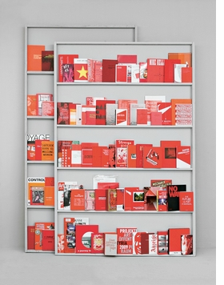
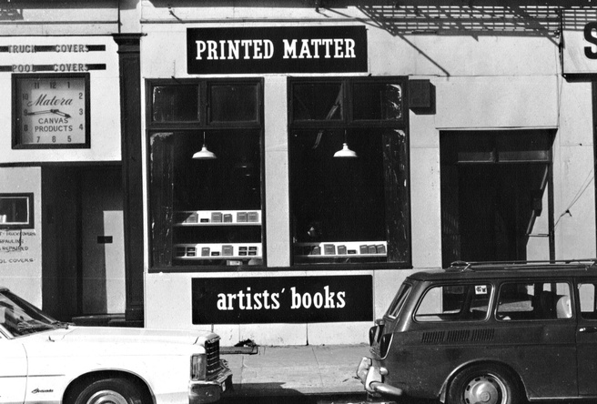
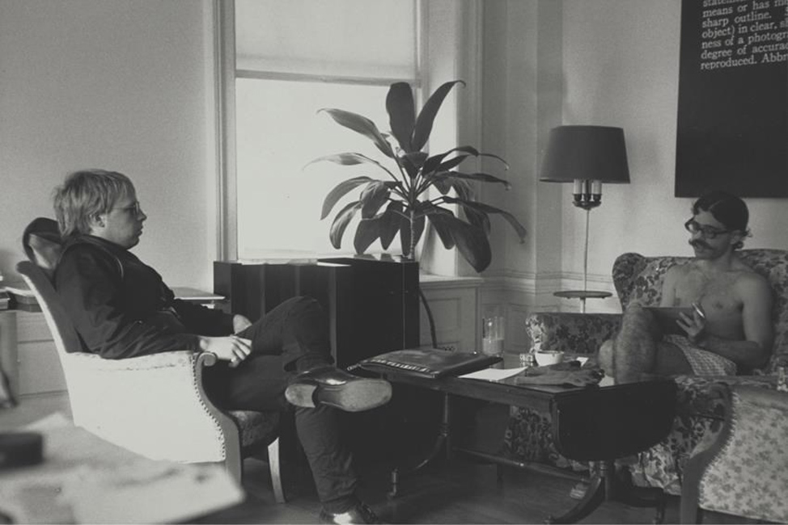

THIS WEBSITE DEALS WITH ART PUBLISHING AS POLITICAL PLATFORM
(IT IS A WORK IN PROGRESS)
As part of the course HT71104B: MA Laboratory: Transforming (Critical) Practices (2020-21)
In the Department of Visual Cultures – Goldsmiths University
We can start to understand art publishing as political platform by looking at a
brief history of art publishing.

Then, we can beging to examine what this means in a
contemporary context by looking at the following terms, interviews and practices:
Book

Catalogs

Designed Books

Publications
From Book To Publishing
Artistic-Autonomy, or: Publishing as Maker Culture
Publishing as Site-Specific Gesture and Critical Intervention

Editorial and Curatorial Practices

Publishing and the Public Sphere, or: Publishing as a Political Issue
Publishing as Creating a Public and/or Forming a Community
(Private) Publishing in a Personal Network of Relationships
Visibility of Cultural Production
Radical Contemporaneity
Publishing as Artistic Practice: The Strictly Artistic Challenge
Technization and the Post Digital
The Starting Point for the NO-ISBN Project

Concerning the Boom of Artists’ Books and Micro Fairs

Ed Ruscha’s Letter - An Alternative Information Service - There is No Such Thing as Neutral Knowledge
Infinite Hospitality - The Library is a Growing Organism - Melvil Dewey as One-Man Silicon Valley

A Library is a Space Where Marketable Goods Are Turned into Public Goods
Book according to Gertrude Stein
The Future of the Book
On the Cult of Books
A User’s Guide to Detournement
The Book as Machine
Dispersion
The Ends of the Book Reading, Economies, and Publics
The book as future of the past
The Work of Art in the Age of Its Digital Reproducibility
The publication is the artwork.
Notes Toward a Publishing Practice
Art Book Fairs

printed matter

Seth Siegelaub

Interview With Tauba Auerbach
Xerox Book
42 entries
at the moment. Check back soon.